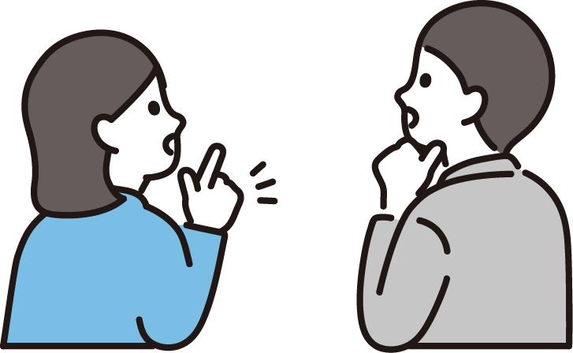
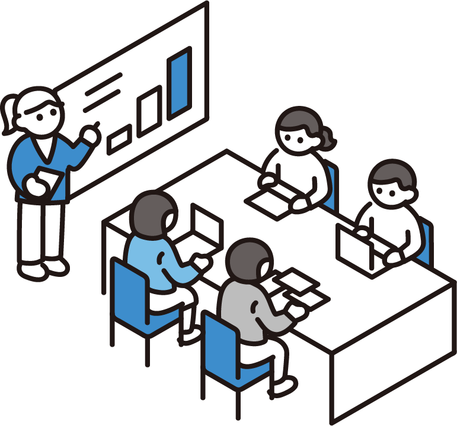

創業期の経営者が抱える税務・会計の課題に、私たちは向き合ってきました。
記帳や経理に時間を取られ、本業に集中できない。自分でやるべきか外注すべきか判断がつかない。
創業融資や補助金の申請を考えているが、事業計画書の作り方がわからず進まない。
月次の数字がタイムリーに見えず、経営判断が後手に回っている。資金繰りの不安がある。
freeeを導入したが使いこなせていない。自動仕訳のルール設定も銀行連携もできていない。
法人設立届出書や青色申告の届出を出したか曖昧。税務署への提出漏れが心配。
役員報酬や経費の処理に自信がない。税務調査で否認されないか不安がある。

「日本一創業期に強いバックオフィス支援グループ」を目指し、テクノロジー×税務で経営をサポートします。
freee認定の最高ランクアドバイザーが在籍。導入設計から自動仕訳ルールの最適化、銀行口座・クレジットカード連携まで、freeeの機能を最大限に活用した経理フローを構築します。
AIエージェントを活用した記帳自動化で月次決算を最短3営業日で完了。freee請求書による売上計上自動化、決済手段連携で立替・現金取引を最小化し、資料のやり取りを減らします。
日本政策金融公庫を中心に、300〜2,000万円規模の資金調達を成功に導いてきた実績があります。事業計画書の作成から金融機関担当者のご紹介まで。顧問契約のお客様は成果報酬4%で支援します。
ご契約からサービス開始まで、スムーズにセットアップを進めます。

創業から成長期まで、ステージに合わせた税務・会計サービスを提供します。
freeeベースの記帳代行から月次レポート、決算・申告まで。Slackでの日常相談は無制限。freee請求書との連携で売上計上も自動化します。
法人設立届出書・青色申告承認届出書などの各種届出を代理提出。創業融資（日本政策金融公庫・保証協会）の事業計画書作成も伴走します。
freee会計の初期設定・自動仕訳ルール構築・銀行口座やクレジットカードの連携・freee請求書の運用設計まで。紙・Excelからクラウドへの移行をフルサポートします。
事業承継を見据えた贈与税シミュレーション、相続税の申告まで。将来の税負担を見据えたプランニングをご提案します。
給与計算・社会保険労務業務は提携社労士をご紹介。支払い誤りのリスク低減、本業時間の確保、将来の従業員雇用を見据えた労務体制の構築を支援します。
はてなベース株式会社と連携し、資金調達支援（STAPA）・kintone導入・業務改善DXまで。税務の枠を超えた経営支援を提供します。
毎月の記帳はシンプルな流れで進行します。不明点はSlackで随時確認。
freee請求書での売上計上、経費領収書の共有をお願いします
銀行明細・クレカ明細・請求書データをもとに仕訳を登録します
記帳中に不明な取引があればSlackで確認。追加資料をいただき再記帳します
記帳完了後、Slackにて完了報告をお送りします。月次レポート付きプランではPL/BSサマリーもご報告します
日常のやり取りはすべてSlackで完結。メール不要で、スピーディに対応します。
専用チャンネルでの日常連絡。スレッドごとにトピックを整理し、複数の相談が同時に進んでも混乱しません。
月次報告や税務相談はZoom / Google Meetで実施。画面共有でfreeeの画面を見ながらご説明します。
売上請求書はfreee請求書で発行。「保存して取引を登録」を使えば売上の仕訳も自動計上されます。
創業期に押さえておきたい税務のポイントをご案内します。
年間売上高に応じたシンプルな料金体系。記帳代行・決算申告・税務相談をすべて含みます。
円（税抜）
決算料には決算書の作成、法人税申告書・消費税申告書の作成・提出が含まれます。
決算申告のみのご依頼も承ります。決算書の作成、法人税・消費税の申告が含まれます。
記帳代行は別途 10,000円/100仕訳（目安）。お支払いは クレジットカード払い（顧問）/ 銀行振込（スポット）。
はい。マネーフォワードや弥生会計など主要な会計ソフトに対応しています。ただし、freeeへの移行をお勧めするケースが多く、移行サポートも行っています。
もちろんです。法人設立届出書・青色申告承認届出書・給与支払事務所開設届出書など、設立時に必要な届出もまとめて代理提出します。
はい。freee＋Slack＋Web面談で全国どこからでも対応可能です。東京・京都であれば対面での打ち合わせにも対応しています。
給与計算・社会保険労務業務は専門外となるため、提携社労士をご紹介しています。社労士と連携することで、支払い誤りのリスク低減・本業時間の確保・将来の雇用に向けた労務体制の整備が可能です。
強制ではありませんが、freee請求書で「保存して取引を登録」機能を使うと売上仕訳が自動計上されるため、効率化の観点からご利用をお勧めしています。
| 運営 | 田村直大税理士事務所 |
|---|---|
| 所在地 | 東京都新宿区愛住町23-1 Woody21ビル6階 |
| 設立 | 2023年10月 |
| 代表 | 田村 直大 |
| 認定・資格 | freee 5つ星認定アドバイザー / kintone認定アソシエイト |
| 提携先 | はてなベース株式会社 / 田村直大公認会計士事務所 |
| 顧問先数 | 約80社（2026年4月時点） |
| 対応エリア | 全国（オンライン）/ 東京・京都（対面可） |
| 主な対象 | 創業期〜成長期の法人・スタートアップ |
| 連絡手段 | Slack（メイン）/ Web面談 / メール |
| HP | https://hatenabase.jp/tax-accountant/ |